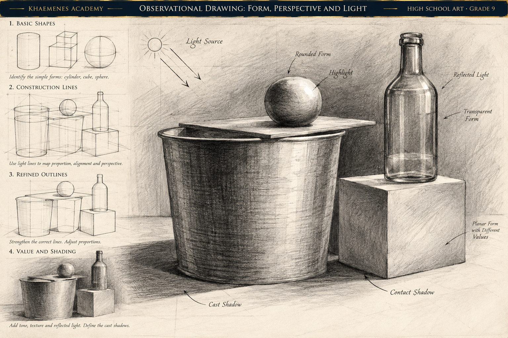

Contour and edge
Observe the boundaries of forms and where one form overlaps another. Some edges are sharp; others soften or disappear in light.
KHAEMENES ACADEMY · HIGH SCHOOL ART · GRADE 9
Unit 05 · Observational Drawing and Figure Studies
How can careful observation, construction lines, and gesture studies help an artist represent forms accurately without sacrificing expression?
Build from Week 10's geometric and figure-movement studies. This week emphasizes looking, measuring relative relationships, and revising from evidence rather than drawing what we assume an object looks like.
Observe the boundaries of forms and where one form overlaps another. Some edges are sharp; others soften or disappear in light.
Start with simple shapes, axes, and landmarks. Compare relative sizes and angles before refining contours.
Capture the overall action of a pose with a line of action, major masses, and points of support before adding details.
Step 1: Arrange a cup partly overlapping a closed book, with a leaf beside them. Look at the objects for thirty seconds before drawing. Step 2: Block the book as a tilted quadrilateral and the cup as an oval over a tapered cylinder. Step 3: Compare cup height with book width, and identify the highest and lowest points. Step 4: Add the leaf's central vein and outer contour. Step 5: Recheck negative spaces and correct at least one angle or proportion before adding surface detail.
The point is not to memorize a perfect cup shape: different viewpoints change the visible ellipse, edges, and overlap. Keep your construction lines as evidence of your process.
Study the original graphite-and-charcoal demonstration before beginning your construction thumbnails. Follow the progression from basic shapes and light guide lines to refined contours, value, and cast shadows. The final still life shows how a cylinder, sphere, bottle, and cube relate through overlap, alignment, and a shared light source.

Identify the three primary solids used to construct the still life. Trace the cylinder's top ellipse and compare its width with the base. Locate the brightest highlight and the darkest contact shadow. Describe how overlapping edges establish depth. Finally, identify one proportion or perspective relationship you would verify by drawing from real objects rather than copying the illustration.
Arrange three everyday objects with visible overlap. Record the viewpoint, dominant shapes, major angles, negative spaces, and where edges appear soft or sharp. Take a reference photograph only if permitted; draw from direct observation first.
Review the geometric-construction reference from Week 10. Make four small studies of your arrangement using circles, ellipses, boxes, centerlines, and sighted angles. Compare the proportions of your shapes without tracing.
Using a consenting model, a mirror, or an appropriately credited reference, draw six quick gesture sketches (30–90 seconds each). Focus on the line of action, ribcage and pelvis masses, support, and direction. Avoid treating any single body proportion as universal.
Create one carefully observed drawing of the three-object arrangement and one developed figure gesture. Compare the work with your subject. Mark at least two corrections: one proportional and one compositional. Keep the before-and-after evidence.
Research two artists or artworks known for observational or figure studies, using credited museum or artist sources. Note creator, title, date if known, medium, source URL and access date. Ask a reviewer which relationships feel convincing and which need rechecking. Write a 120–200 word reflection on observation, assumptions, and revision.
Complete four construction thumbnails, six gesture sketches, one observational still-life drawing, one developed gesture study, and a documented revision. Label the subject, viewpoint, medium, and date on each study.
Evidence saves only in this browser. Export a backup. Browser-local records do not establish authenticated learner identity or Academy progression.
Observation and proportion (25) · Construction studies (20) · Gesture and movement (20) · Revision and critique (20) · Research, citations and portfolio evidence (15). Teacher review is separate from formative practice.
Five randomized questions are selected from a fifteen-question bank. Four correct meets the 80% practice threshold. Submitted answers lock; a retake generates a new selection. This does not independently unlock the next Academy lesson.
Keep your studies in the artist portfolio begun in Week 01. Next, students will examine light, shadow, and volume in greater depth.
Return to Unit 05 overview